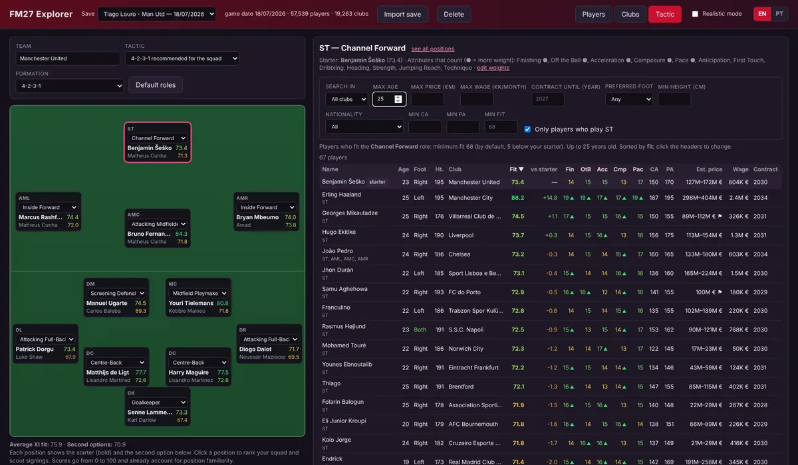
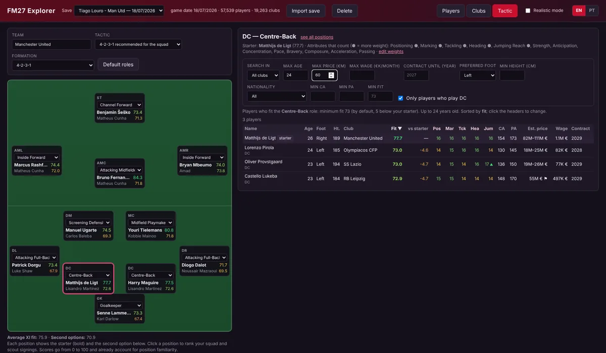
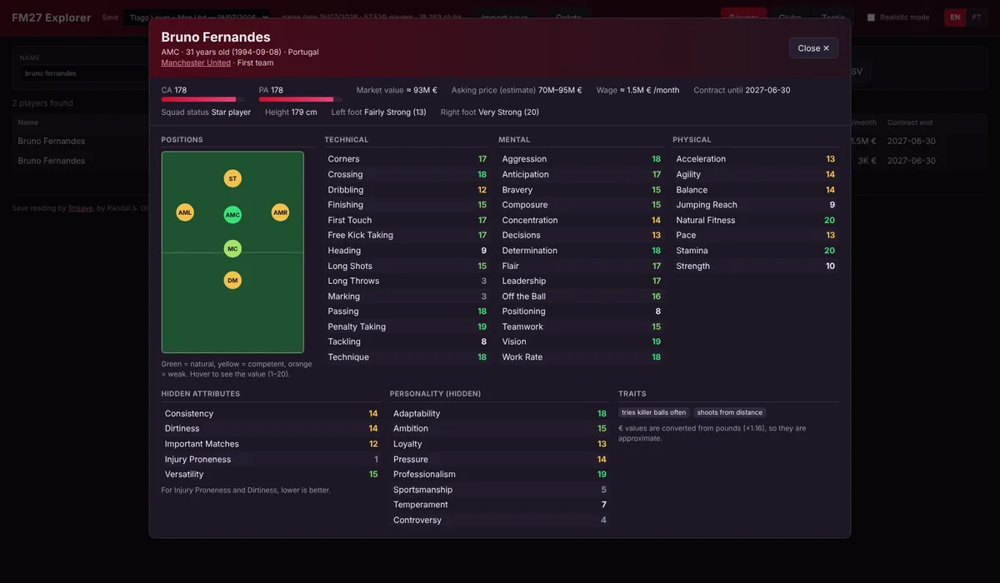
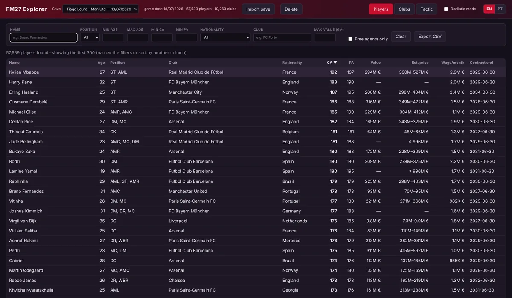
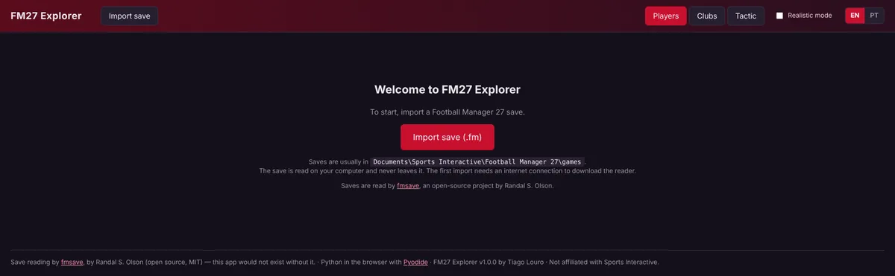

Reads your save
Import a .fm save and browse every player and club in your game world, including hidden attributes, contracts and release clauses.
FOOTBALL MANAGER TOOL · v1.0
Find the right players for your tactic.
FM27 Explorer reads your Football Manager 2027 save and answers the questions the game makes hard: which of my players fit the roles of my tactic, where is my squad weak, and who should I sign to fix it?
Import a .fm save and browse every player and club in your game world, including hidden attributes, contracts and release clauses.
Pick a formation and a role for each position. It builds your best XI, shows the second option and flags the weak spots.
Click a position to search the whole world for players who fit that role, with key attributes, estimated price, age, foot and height.
Screenshots
A Manchester United save, in the app's default English interface.





A single HTML file that runs in Chrome or Edge on your own computer — no installation. English by default, with a Portuguese option.
Documents\Sports Interactive\Football Manager 27\games.The first import needs an internet connection to download the save reader. Fit scores and asking prices are the app's own estimates, not the game's internal values.
Football Manager 26 and 27 removed the old export to HTML/CSV, so the data has to come from the save itself. Instead of reverse-engineering the format, FM27 Explorer builds on an open-source save reader and runs it inside the browser with Pyodide, so nothing needs installing and the save never leaves your machine.
I built it as a side project with an AI pair-programmer (Claude): I acted as product owner and tester — defining the problem, trying each version in a real save and deciding scope and trade-offs — while the AI did most of the engineering. Read the case study.